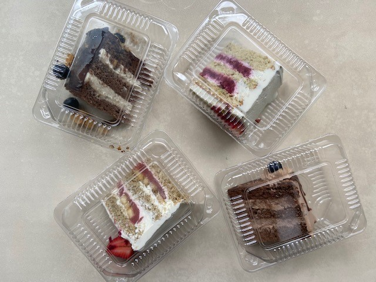
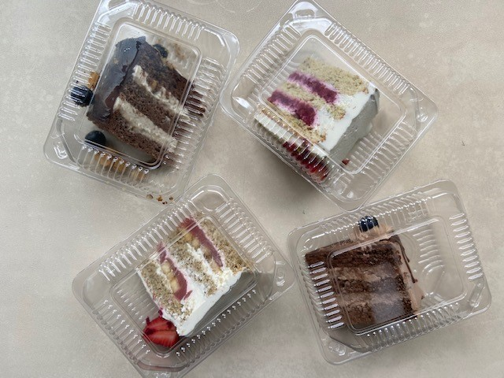

Mai's Blog
コロナにかかりました
今日は2021年6月13日日曜日、本来ならもう日本について、久しぶりのおうちでくつろいでいるところでした。がまさかの、渡航前のPCR検査で陽性反応が確認され、学校の隔離部屋で2週間の滞在が決まりました。ちなみに一緒に帰国予定だった他の日本人留学生も一緒です。実は全く無症状だったわけではなく、私を含め全員、頭痛や喉の痛み、だるさなど疑われる症状がありました。 わたしは6月11日の朝から頭が痛くなり、全身の凝りを感じました。熱はなく36.0度でした。6月12日は頭痛に加えて、タン混ざりの咳、食後の吐き気を感じるようになりました。この日に、コロナに直接効く薬を渡されました。薬はファビピラビル（アビガン）です。薬の効果かその後食後の吐き気はなくなりました。この日の熱はなく36.0度でした。6月13日の今日は昨日と同様、頭痛と、タン混ざりの咳がありますが、それ以外は問題なく、軽くヨガやストレッチなどをしました。食事は寮の食堂で出されるものを頂いています。食欲もあり、味覚、嗅覚ともにあります。


隔離中のごはん:寮で出されているものをプラスチックの容器に入れて寮母が持ってきてくれます。

隔離部屋の様子：3人部屋で、冷蔵庫、電子レンジ、ポット、ドライヤーがおいてあり、かなり快適です。窓も大きく光も入ってきます。


コロナにかかりましたその２
今日は6月14日月曜日。熱は36.5度で問題なしです。喉がまだすこしイガイガするのと、頭痛が残っている以外は普段と変わりありません。朝、ヨガとトレーニングをし、ブログやパソコンの作業も特に問題ありませんでした。食欲もあり、嗅覚、味覚も平常。やはり薬がちゃんと効いているきがします。このまま回復に向かうことを願います。 6月15日、相変わらず咳はまだ出ます。頭痛はほんの少しだけあります。ちょっと鼻声ですが、熱はなく36.5度。食欲もあり、味覚、嗅覚も異常なしです。


ごはんはこんな感じです。
6月16日、今日は暑いです。冷房がないので大変です。体調は相変わらずで、のどがまだ少しいがいがしますが、タン混ざりの咳は減ってきました。頭痛もほとんどなくなってきました。熱もなく、食欲あります。鼻水が出るわけではないのですが鼻声です。
6月17日、今日は今までの中で一番体調が良い感じです。なんとなくだるかったのが軽くなりました。咳だけは相変わらずありますが、タン混ざりの咳ではなく乾燥した咳です。熱もなく、食欲もあります。
6月18日、昨日同様、身体のダル重さはほとんどありません。まだ咳は出ます。熱もなく36度。今日もヨガ、バーレッスン、筋トレなどをしました。
6月19日昨日までの鼻のつまりはなくなりました。乾燥した咳はまだでます。昨日咳止めの薬をもらいました。今はコロナに直接効く薬の後にもらった抗ウイルス剤と、咳止めを飲んでいます。月曜日にPCR検査があるから、そこで陰性になることを願うばかりです。
6月20日。体調良好です。食欲もあります。熱もありません。ビザが6月末までの期限だったので心配でしたが、プーチン大統領の声明で、コロナに感染した場合は9月末まであればビザが切れていても免除されることになり、一安心です。
6月22日。昨日PCR検査を受けました。コロナウイルスは菌が死んでいて感染効力がなくても検査で反応して陽性になってしまうことがあるそうです。結果は明日分かります。それと今はもう飲んでいないが咳がまだ出ていた時に飲んでいたタン混ざりの咳止め薬がこちらです。名前はブロムヘキシン。
コロナにかかりましたその３
今日は6月24日。昨日月曜日に受けたPCR検査の結果が分かりました。一緒にコロナに感染し隔離していた6人のうち1人のみが陰性で、他はみんな陽性でした。そのため彼だけが今週末に帰国となりました。ちなみに彼より前に感染が確認され先に隔離されていた子は発症から20日以上が過ぎているのに未だ陽性でした。みんな体調は平常に戻っていて、テスト（検査）の結果が陰性になるのを待つしかない状況です。話によると、すでに感染効力を失った死んだウイルスでも、PCRの検査で反応して陽性になることがあるそう。だとしたらかなりやっかいです。
ありがたいことに、学校の看護婦さんや、寮母さん、通訳の方などが私たちの面倒をみてくれ、お見舞いに食べ物や、必要なものを買ってきてくれました。今日は隔離しているメンバーの一人がお誕生日だったのでピザやケーキを買って届けてくれました。ありがたいです。
 

お誕生日のお祝いに頂いたジャンキーな食べ物たち。（笑）。帰れないことが分かって、みんなかなりへこみましたが、これで元気でました！
6月26日。検査が陰性となるには何をすればよいのでしょうかね。すでに無症状で薬も飲んでないので、ただ陰性になるのを待つのみです。できる事と言えば、専用の鼻洗い液で鼻を洗い、うがい薬でうがいすることくらいです。ただ、検査は何となくそういう表面的な問題ではないような気もします。


ちなみにこれがその鼻うがい用の薬です。専用のボトルと粉が入っていて、水に溶かして鼻を洗浄します。プールサイドの塩素と同じ匂いがします。本来はインフルエンザの感染予防などに使われます。
コロナにかかりましたその４
（このブログは7月14日に書いたもので、当時の状況を回想してます。）
6月24日にPCR検査を受けてから10日後に再びPCR検査を受けてやっと陰性反応がでました。もう結果を待つ時は試験の合格発表を待つ時、またはそれ以上の緊張感でした。この時期はロシア国内でコロナ感染拡大第3波が来ていて、その影響でPCR検査を受ける人が急増し、検査の予約が取りにくい状況でした。そのため、普通であればPCR検査を受けてから再検査ができるまで2週間待つ必要がありましたが、私たちは帰国しなければならないという特別な理由があったため、短い間隔で受けることができました。それでも10日間は検査を受けてから、次の検査まで待たなくてはならないので、かなりしんどかったです。そんな中、無事に陰性反応が確認され、次の週の便で帰国が決定しました。この時のわたしは、これから更なる大ハプニング、試練が待ち受けているとは知る由もありませんでした。